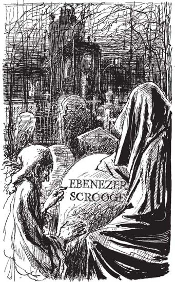

Listen to Part 1:
Bóng ma không nói gì, Scrooge nắm ngay lấy chiếc áo choàng đen. Hai người lại tiếp tục. Họ đi qua những con phố mà Scrooge đều nhận ra. Nhưng ông không thể trông thấy chính mình ở đâu cả. Ông đã nhìn thấy mình trong cuộc sống trước khi còn là đứa trẻ và khi là một chàng trai. Nhưng ông không thể thấy mình trong tương lai.
Bóng ma dừng lại trước một ngôi nhà mà Scrooge nhận ra. Đó chính là nhà của Bob Cratchit.
Scrooge thấy bà Cratchit và những đứa trẻ trong nhà. Tất cả đều rất lặng lẽ. Bà Cratchit và những cô con gái đang khâu vá. Họ đang may những bộ đồ màu đen. Scrooge biết ngay là đã có ai đó mất.
Peter đang đọc Kinh thánh to lên. Cậu bé đang đọc một câu chuyện về Chúa Giêsu và một đứa trẻ nhỏ. Cậu bé còn đang khóc.
Peter ngừng đọc. "Bố lại về muộn rồi", cậu bé vừa nói vừa.
Tất cả đám trẻ trông đều rất buồn bã.
Bà Cratchit nhẹ nhàng nói: "Khi Tiny Tim còn sống, bố thường về rất nhanh". "Bố còn thích cõng Tiny Tim trên vai nữa"
Khi Bob về đến nhà, tất cả đám trẻ chạy ra để đón bố ngoài cửa.
Bob nhìn vào những bộ đồ đen. "Các con may xong rồi hả?" - ông hỏi. "Chúng ta mặc bộ quần áo này trong lễ tang vào Chủ Nhật chứ? Hôm nay bố đã đến nhà thờ rồi. Bố đã sắp xếp xong mọi thứ để mai táng Tiny Tim".
Listen to Part 2:
Rồi ông ngồi xuống và khóc.
Cuối cùng, Bob cũng lên nhà. Thi hài của Tiny Tim đang nằm trên giường. Bob ngồi xuống bên cạnh giường và nhìn đứa con nhỏ đã khuất của mình. Sau đó, ông mỉm cười. Ông hôn lên khuôn mặt nhỏ nhắn của Tiny Tim rồi đi xuống nhà.
Gia đình Cratchit ngồi quây quần bên bếp lửa và trò chuyện. "Cháu của ông Scrooge có nói chuyện rất tử tế với tôi. Cháu ấy rất buồn khi nghe về Tiny Tim", - Bob kể. "Nó còn nói sẽ giúp chúng ta nữa. Nó sẽ sắp xếp một công việc cho Peter".
Bà Cratchit nói: "Phải rồi, Peter giờ cũng gần mười hai tuổi rồi. Con bé phải kiếm được một công việc thôi". "Các đứa trẻ khác cũng sắp đến tuổi cần tìm việc rồi".
Bob nói: "Chúng ta phải luôn nhớ về Tiny Tim". "Đó là một đứa trẻ ngoan và hạnh phúc". "Hứa với bố là các con sẽ mãi luôn nhớ về con bé nha".
Tất cả hứa.
Scrooge nhìn gia đình đau buồn ấy. Sau đó, ông quay sang nói chuyện với bóng ma. "Tôi nghĩ là ông sẽ sớm rời khỏi tôi lắm đây", - ông nói. "Ông đã chỉ cho tôi thấy rất nhiều thứ rồi. Nhưng làm ơn cho tôi biết với, người đã khuất là ai vậy?"
Bóng Ma Giáng sinh tương lai chỉ về phía sau Scrooge và họ lại tiếp tục di chuyển. Họ trở về khu phố ở London mà Scrooge thuộc như lòng bàn tay. Băng qua một tòa nhà có dòng chữ "Scrooge và Marley" phía trên cửa ra vào.
Scrooge nói: "Dừng lại, Bóng ma".
Nhưng bóng ma cứ tiếp tục bước đi. Scrooge chạy lại để nhìn qua ô cửa vào phòng làm việc của mình. Căn phòng vẫn vậy, chỉ có đồ đạc thì khác rồi. Và người đang ngồi trong phòng không phải là Scrooge.
Listen to Part 3:
Scrooge chạy lại chỗ bóng ma. Chẳng mấy chốc, họ đã đến một nhà thờ.
Bóng ma đi qua cánh cổng và vào nghĩa địa. Bóng ma đi qua rất nhiều bia mộ. Rồi dừng lại, chỉ xuống một nấm mồ.
Scrooge sợ hãi, sợ lắm. Rồi cuối cùng ông cũng nhìn vào cái tên trên mộ: EBENEZER SCROOGE.
Ông kêu lên: "Không, Bóng ma ôi! Không, không!". Nhưng bóng ma chỉ về Scrooge, rồi lại chỉ xuống mặt đất.
Scrooge nắm lấy áo choàng đen của bóng ma và kêu lên: "Hãy lắng nghe này!". "Ông đã cho tôi thấy nhiều điều khủng khiếp lắm rồi. Có phải tất cả đều sẽ xảy ra thế? Tôi có thể ngăn chặn chúng không?"
Scrooge quỳ sụp xuống trước mặt bóng ma. "Ông đúng là một bóng ma tốt, phải không? Ông đến đây là để giúp tôi, phải không? Cả ba người các ông đều đến để giúp tôi mà".

Cuối cùng, Scrooge cũng nhìn vào cái tên trên mộ.
Ông nói: "Tôi sẽ sống tốt hơn. Tôi sẽ quan tâm đến mọi người. Tôi sẽ quan tâm đến Giáng sinh. Tôi sẽ suy ngẫm về Quá khứ, Hiện tại và Tương lai. Làm ơn, ông hãy nói với tôi rằng những chuyện đó sẽ không xảy ra".
Scrooge cố gắng giữ lấy áo choàng của bóng ma. Nhưng bất thình lình ông đã trở về trong phòng ngủ của mình. Ông đang nắm lấy một cột giường bằng gỗ.